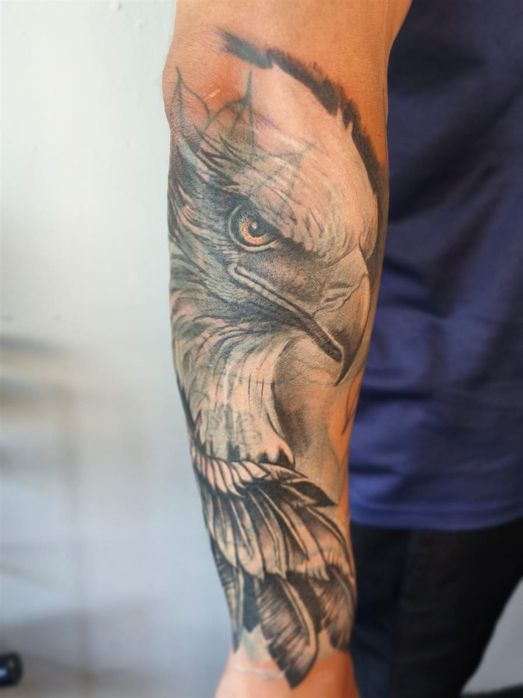

Meus trabalhos
Cor, detalhe e acabamento. Escolha um estilo e toque numa foto para ampliar.


Tem uma tatuagem que você não quer mais?
Muita gente acha que tatuagem não dá para cobrir. Na maioria dos casos dá, e o resultado pode ficar melhor do que o desenho original. Avalio cada caso junto com você e explico o processo e o valor antes de começar.

 AntesDepois
AntesDepois
Antebraço

 AntesDepois
AntesDepois
Costas

 AntesDepois
AntesDepois
Mão
Arraste a barra dourada para ver o antes e o depois. Também cobre cicatrizes, queimaduras e estrias, em casos avaliados individualmente.
Aprendi sozinho, e nunca parei de aprender.
Comecei há 15 anos com uma máquina caseira, fazendo pequenas tatuagens em domicílio. Virou paixão e virou profissão. Hoje vivo só de tatuagem, há 8 anos, com mais de 3 mil trabalhos e duas convenções ganhas, uma de realismo e outra de anime.
Sou criativo, curioso e resolutivo. Prefiro criar desenhos exclusivos para você, e trabalhos grandes em várias sessões, para a qualidade ficar no nível que merece.
Realismo e anime: os dois estilos das convenções que ganhei.
Da ideia à pele em quatro passos
- Você chama no WhatsAppConta a ideia, o tamanho e a região. Mande referências se tiver, por texto ou áudio.
- Orçamento e dataValor combinado antes. Sinal de R$ 80 reserva o horário e abate do valor final.
- O desenho nasce no diaCrio e ajusto a arte com você na hora, sem cobrar pelo projeto. Alterações sem custo.
- Sessão e cuidadosPausas conforme você precisar, fotos do resultado e todas as orientações de cuidado no fim.
Valor justo para um trabalho que fica
Valores de referência. O preço final depende do tamanho, da região, do estilo e da complexidade.
| Até 5 cm | R$ 120 |
| 5 a 10 cm | R$ 220 |
| 10 a 20 cm | R$ 500 |
| Grande (30 cm ou mais) | R$ 1.200 a 1.800 |
Fechamentos (braço, costas, peitoral, perna) e coberturas têm orçamento sob medida pelo WhatsApp. Valor mínimo por tatuagem: R$ 120.
Já viu o suficiente? Peça seu orçamento. Se ainda tem dúvida, as perguntas mais comuns estão logo abaixo.
As perguntas que mais ouço
Dói?
Depende da região e da sua sensibilidade. Faço pausas durante a sessão para você descansar. Também trabalho com pomada anestésica sob encomenda, com o valor acrescido na sessão. Para ela funcionar bem, mantenha a pele hidratada nos dias antes.
Quanto tempo demora?
Peças pequenas e médias saem numa sessão. Trabalhos grandes são divididos em várias sessões, de no máximo 5 horas, para a qualidade do resultado.
Dá para cobrir uma tatuagem antiga?
Na maioria dos casos, sim. Avalio o seu caso, explico como seria o processo e o valor, e só começo quando você estiver ciente de tudo.
Tatuagem fica bonita em pele morena e negra?
Fica. O que muda é a técnica e a escolha das cores, e isso eu avalio com você. Pele escura tem tatuagem de alto nível, sim.
Preciso levar o desenho pronto?
Não. Mande a ideia e as referências por texto ou áudio, com o local e o tamanho. O desenho final é criado e ajustado no dia da tatuagem, junto com você.
E se eu quiser remarcar ou desistir?
Avise com 2 dias de antecedência. Se remarcar em até 10 dias, o sinal de R$ 80 é abatido normalmente do valor da tatuagem. Em caso de desistência, o sinal não é devolvido.
Quem tem pele sensível ou alguma condição de saúde pode tatuar?
Cada caso é avaliado. Doença não impede sempre, mas não é recomendada por causa da menor resistência do corpo. Gravidez, uso de bebida alcoólica e anticoagulantes impedem a sessão.
Conta a sua ideia. A gente cuida do resto.
Responda umas perguntas rápidas, leva menos de 1 minuto. No final, a conversa abre direto comigo no WhatsApp, já com tudo preenchido.
Como você chegou até aqui?
Quantos anos você tem?
Qual é o seu nome?
Em que parte do corpo?
Qual é a sua ideia?
As fotos de referência você me manda depois, direto no WhatsApp.
Seu WhatsApp, para eu te achar
Uso só para falar do seu orçamento. Não peço nenhuma informação de saúde aqui.
Tudo certo!
Estou abrindo o WhatsApp com as suas respostas. Se não abrir sozinho, toque no botão:
Abrir o WhatsApp →Prefere falar direto? Chamar no WhatsApp do estúdio
Do dia da sessão até a tatuagem cicatrizar
Uma tatuagem bonita depende de 50% do tatuador e de 50% de como você cuida dela. Este é o passo a passo geral. No fim da sessão, passo as orientações específicas para a sua pele e para o seu desenho, e elas valem mais do que este resumo.
1 · Antes da sessãoPrepare-se para a sessão
- Hidrate a pele nos dias anteriores. Pele hidratada recebe melhor o pigmento e responde melhor à pomada anestésica, se você optar por ela.
- Durma bem e se alimente antes de vir. Sessão longa com o estômago vazio aumenta a chance de tontura.
- Não beba álcool no dia: ele deixa a pele mais sensível e o sangramento maior, e por isso a sessão não é feita.
- Evite sol e bronzeamento na região. Pele queimada ou descascando precisa esperar.
- Use roupa confortável que deixe a área à mostra.
2 · No diaLogo depois da sessão
- Eu cubro a tatuagem com plástico filme para proteger no trajeto. Retire quando eu orientar.
- Em casa, lave a região com sabão neutro e as mãos bem limpas, com água morna ou fria, sem esfregar. Isso tira o excesso de plasma e de tinta.
- Seque dando batidinhas com papel toalha limpo. Toalha de banho acumula bactéria.
- É normal ficar vermelho, quente e sensível nas primeiras horas.
3 · Primeiros diasHidratar e não mexer
- No dia seguinte, passe um creme hidratante para a pele, em camada fina, só o que a pele absorver. Excesso abafa e atrapalha.
- Repita a limpeza e a hidratação algumas vezes por dia, conforme eu orientar para a sua tatuagem.
- Evite carne de porco, chocolate e ovo por cerca de uma semana. É a minha recomendação para a cicatrização.
- Não coce e não arranque casquinhas. Descamar é normal. Arrancar tira tinta e deixa falha.
- Prefira roupa folgada sobre a região.
4 · Até cicatrizarProteja a tatuagem
- Por algumas semanas, evite sol direto, piscina, mar, sauna e banheira. Água parada e calor atrapalham a cicatrização.
- Depois de curada, use protetor solar sempre. O sol é o que mais desbota tatuagem com o tempo.
- Se precisar de ajuste, o retoque é gratuito até 45 dias. Fale com o estúdio para agendar.
Procure ajuda se
- A vermelhidão, o inchaço ou o calor aumentam depois dos primeiros dias
- Sair pus ou a região ficar com cheiro forte
- Você tiver febre ou a dor piorar em vez de melhorar
Nesses casos, chame o estúdio e procure atendimento médico. Não tente tratar em casa.
Biossegurança
- Material 100% descartável, com filme e luvas
- Tintas de marcas regularizadas
- Higienização completa entre um cliente e outro
Menores: a partir de 16 anos, com autorização dos pais ou responsável. Pode levar até 3 acompanhantes e filmar a sessão.
Centro de Campinas
Estúdio da Debby
Av. Andrade Neves, 365 · Campinas, SP
Atendimento com hora marcada, em qualquer dia conforme a agenda.
Abrir o local exato no Google Maps
Dica: se você digitar o endereço direto no GPS, ele pode te levar ao lugar errado. Use o botão acima, que abre o ponto exato do estúdio.